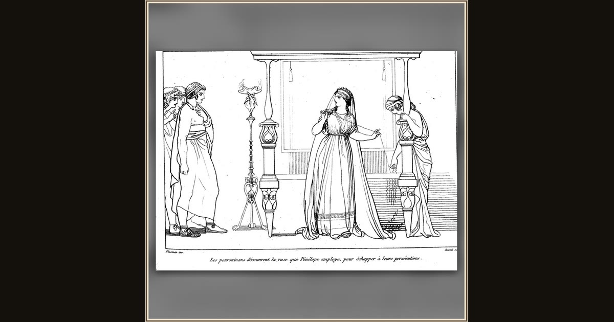

The suitors discover Penelope's ruse
John Flaxman · 1810 · Wikimedia Commons
At the loom's foot a maid crouches, unpicking the weaving thread by thread while three suitors point - the trick caught in the act. This is the tale Antinous throws at the assembly in Book II: Penelope wove Laertes's shroud by day and unravelled it each night